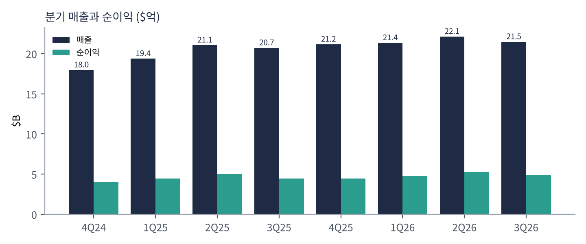
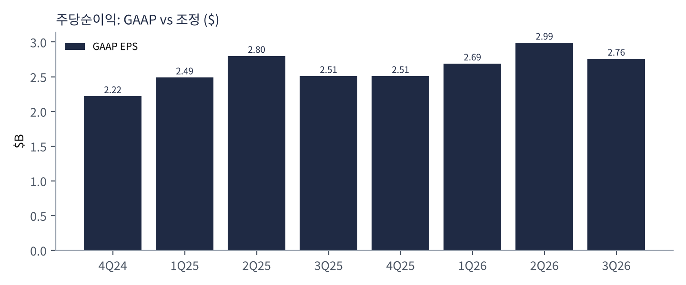
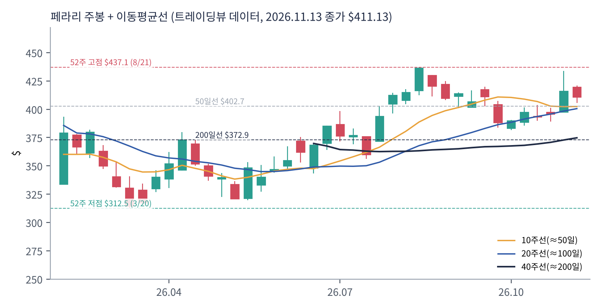
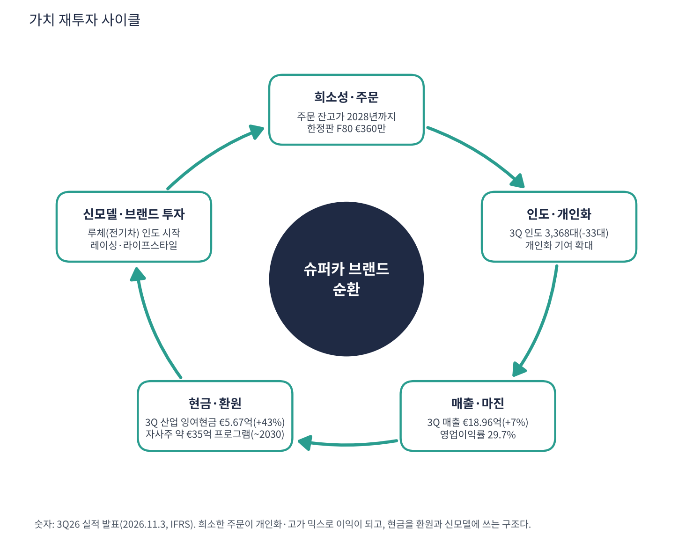

페라리는 소량 생산한 슈퍼카와 개인화 옵션, 레이싱·라이선스·라이프스타일로 돈을 버는 이탈리아 회사다. 인도 대수는 정체인데 가격·개인화 믹스로 이익이 늘고, PER과 PEG가 높은 회사다.
| 항목 | 내용 |
|---|---|
| 종목 | Ferrari (RACE) · NYSE · 럭셔리 자동차 · 이탈리아 마라넬로 |
| 멀티플 | PER 38.1배(TTM) · P/S 8.65배 (11/13 종가 $411.13) |
| 최근 분기(3Q26) | 매출 €18.96억(+7%), 순이익 €4.31억(+13%), EPS €2.44, 인도 3,368대 |
| 2026 가이던스 | 순매출 약 €76.5억, 조정 EBITDA 최소 €30억, 조정 EPS 최소 €9.85 |
| 현금·부채 | 스캐너(US$): 현금 $19.9억, 총차입금 $35.4억, TTM 잉여현금 $23.5억 |
| 직책 | 인물 | 역할·특징 |
|---|---|---|
| CEO | 베네데토 비냐 | 희소성과 개인화를 활용한 믹스 개선, 자본시장일 목표 이행을 강조 |
경영 스타일: '대수를 늘리지 않고 가격·믹스·개인화로 이익을 키운다'. 주문 잔고가 2028년까지 이어지고, 2025년 10월 자본시장일에서 약 €35억 규모 자사주 프로그램을 2030년까지 집행하겠다고 밝혔다.
12칠린드리, F80, 루체(첫 전기차). 신모델 출시 전환기로 인도 대수 조정.
주문을 쌓아 두고 고객 맞춤 옵션과 경험(Casa Ferrari·F1 연계)으로 부가 수익을 확대한다.
다음 실적발표(4Q26)는 세 가지 질문에 답하는 자리다.
질문 1. 2026 가이던스를 지키거나 넘는가?
| 확인할 숫자 | 좋아지면 | 나빠지면 |
|---|---|---|
| 순매출 약 €76.5억, 조정 EBITDA 최소 €30억(마진 39.2% 이상), 조정 EPS 최소 €9.85 | 가이던스 이상이면 ③매출·마진 고리가 확인된다 | 미달이면 개인화·믹스 가정이 약해진다 |
질문 2. 인도 감소를 믹스·개인화가 계속 메우는가?
| 확인할 숫자 | 좋아지면 | 나빠지면 |
|---|---|---|
| 3Q 인도 3,368대(-33대), 누적 -318대, 중국 약세 | 믹스·개인화가 지속되면 ②고리 유지 | 인도 감소가 커지면 매출 성장 근거가 줄어든다 |
질문 3. 2027 가이던스와 루체 인도 일정은?
| 확인할 숫자 | 좋아지면 | 나빠지면 |
|---|---|---|
| 루체 초기 인도 4Q 시작, 2027 초 미디어·고객 시승 | 일정대로면 ⑤신모델 고리가 열린다 | 지연이면 신규 수요 가정이 약해진다 |
한 줄 판정 규칙: 첫 질문이 가이던스 이상이면 약한 고리(인도 정체)가 풀리고, 믹스 효과가 줄면 성장 근거가 약해진다.
일정: 2027-02-04 예정(트레이딩뷰 일정, 회사 확정 확인 필요).
| 분기 | 매출 | 순이익 | EPS | 조정 EPS | 특이 사항 |
|---|---|---|---|---|---|
| 4Q24 | $18.0억 | $4.0억 | 2.22 | – | |
| 1Q25 | $19.4억 | $4.5억 | 2.49 | – | |
| 2Q25 | $21.1억 | $5.0억 | 2.80 | – | |
| 3Q25 | $20.7억 | $4.5억 | 2.51 | – | |
| 4Q25 | $21.2억 | $4.5억 | 2.51 | – | |
| 1Q26 | $21.4억 | $4.8억 | 2.69 | – | |
| 2Q26 | $22.1억 | $5.3억 | 2.99 | – | |
| 3Q26 | $21.5억 | $4.9억 | 2.76 | – | 3Q 인도 -1%, 개인화·F80 믹스로 이익 증가 |


값은 트레이딩뷰 스캐너 분기 이력으로 US$ 환산이다(회사 발표는 유로, IFRS). 3Q26 EPS는 회사 기준 €2.44(전년 €2.14)다. 페라리는 US GAAP 조정 EPS가 없어 조정 EPS 열은 '–'다. 분기 설비투자는 구하지 못했다.
흐름 요약: US$ 환산 매출은 4Q24 $21.5억에서 3Q26 $17.97억 사이를 움직인다(환율 영향 포함). 회사 기준(€)으로 3Q 매출은 +7%, 고정환율 +10%다.
| 항목 | 값 | 비고 |
|---|---|---|
| 3Q 순매출 | €18.96억(+7%) | 고정환율 +10% |
| 인도 | 3,368대(-33대, -1%) | 누적 -318대, 중국 약세 보도 |
| 개인화 | 가이던스 상향 요인 | 회사 |
| 레이싱 | 스폰서십·엔진 임대 증가 | 3Q 증가 |
자동차(Sports Cars)가 중심이고 레이싱·브랜드 매출이 더해진다. 대수는 줄어도 믹스·개인화로 매출이 늘었다. 부문별 비중 표는 이번에 구하지 못했다.
페라리는 '희소성을 지키며 브랜드와 개인화로 이익을 키우는 것'을 목표로 한다.
| 축 | 최근 움직임 |
|---|---|
| 제품 | 12칠린드리·F80·루체 등 신모델 전환 |
| 고객 | 개인화·Casa Ferrari 경험 |
| 환원 | 2030년까지 약 €35억 자사주 프로그램 |

| 이동평균 | 값 | 종가 대비 | 해석 |
|---|---|---|---|
| 5일선 | $413.40 | -0.5% | 현재가가 아래 |
| 20일선 | $405.52 | +1.4% | 현재가가 위 |
| 50일선 | $402.66 | +2.1% | 현재가가 위 |
| 100일선 | $398.75 | +3.1% | 현재가가 위 |
| 200일선 | $372.95 | +10.2% | 현재가가 위 (+10%) |
주봉 흐름: 52주 고점 $437.15(8/21), 52주 저점 $312.51(3/20). 현재가 $411.13는 200일선 $372.95보다 위, 50일선 $402.66보다 위에 있다.
| 규칙 | 기준 | 현재 값 | 신호 |
|---|---|---|---|
| 장기 추세 필터 | 종가 vs 200일선 | $411.13 > $372.95 | 매수 |
| 중장기 교차 | 50일선 vs 200일선 | $402.66 > $372.95 | 매수 |
| 단기 교차 | 20일선 vs 50일선 | $405.52 > $402.66 | 매수 |
| 돈키언 채널 | 55일 고가 $433.99 / 저가 $381.67 | 중간값 $407.83 위 | 매수 |
| 1개월 모멘텀 | 21거래일 수익률 | +3.2% (기준 $398.24) | 매수 |
| 3개월 모멘텀 | 63거래일 수익률 | -1.4% (기준 $417.10) | 매도 |
| 6개월 모멘텀 | 126거래일 수익률 | +28.0% (기준 $321.20) | 매수 |
| 12개월 모멘텀 | 252거래일 수익률 | -2.0% (기준 $419.52) | 매도 |
| 종합 (8개 평균) | +0.50 | 매수 우위 |
해석: 8개 신호 중 매수 6개, 매도 2개(점수 +0.50, 매수 우위)다. 14일 ATR $9.14 (2.2%).
| 가격·조건 | 무엇이 바뀌나 | 의미 |
|---|---|---|
| $417.10 돌파 | 3개월 기준가 | 매도 → 매수 |
| $419.52 돌파 | 12개월 기준가 | 매도 → 매수 |
| $372.95 돌파 | 200일선 | 이탈하면 매수 → 매도 |
| 50일선이 200일선 위로 | 50/200 교차 | 이탈하면 매수 → 매도 |
| 20일선이 50일선 위로 | 20/50 교차 | 이탈하면 매수 → 매도 |
| 구분 | 가격대 | 근거 |
|---|---|---|
| 저항 1 | $413.40 | 5일선 |
| 저항 2 | $433.99 | 55일 고점 |
| 지지 1 | $405.52 | 20일선 |
| 지지 2 | $402.66 | 50일선 |
점수는 +0.50(매수 우위)다. 14일 ATR은 $9.14로 현재가의 2.2%다. 가까운 저항 $413.40을 종가로 넘는지와 가까운 지지 $405.52를 지키는지가 신호 전환의 기준이다. (내 가정, 매매 권유 아님)
| 악재 요인 | 내용 | 강도 |
|---|---|---|
| 인도 정체 | 3Q 인도 -1%, 누적 -318대 | 중간 |
| 중국·환율 | 중국 약세, 달러·엔 환율 역풍 | 중간 |
| 밸류에이션 | PER 38배, PEG 6.1 | 높음 |
| 신모델 전환 | 루체 등 신모델 출시·전환 비용 | 중간 |
| 티커 | 회사 | PER(TTM) | PEG | P/S | EPS 성장(YoY) |
|---|---|---|---|---|---|
| RACE | 페라리 | 38.1배 | 6.13 | 8.65배 | +3% |
| TSLA | 테슬라 | 429.2배 | – | 13.59배 | -39% |
| GM | GM | 19.7배 | – | 0.41배 | -12% |
| TM | 토요타(ADR) | 9.7배 | – | 0.73배 | -7% |
RACE 첫 행은 스캐너 값이다. 대중 자동차 업체와는 사업 모델이 달라 직접 비교가 어렵다(참고용). TSLA·GM·TM은 EPS가 감소해 PEG가 없다.
페라리는 현금성 자산 $19.9억에 비해 총차입금 $35.4억(금융 포함)으로 순차입 약 $15.5억이다. TTM 잉여현금은 $23.5억이다.
| 지표 | 값 | 계산·출처 | 해석 |
|---|---|---|---|
| 현금 | $19.9억 | 스캐너(US$) | 3Q 산업 잉여현금 €5.67억(회사) |
| 총차입금 | $35.4억 | 스캐너(US$) | 금융 서비스 차입 포함 여부 확인 필요 |
| TTM 잉여현금흐름 | $23.5억 | 스캐너(US$) | TTM 매출 $84.8억 대비 약 27.7%(내 계산) |
| TTM EBITDA | $33.5억 | 스캐너(US$) | TTM 매출 대비 약 39.5%(내 계산) |
| 기준 | 값 | 비고 |
|---|---|---|
| P/S (TTM) | 8.65배 | 스캐너 |
| 동종 | TSLA 13.6, GM 0.41, TM 0.73 | 11/13 스캐너 |
해석: P/S 8.7배는 대중 자동차 업체(GM 0.4, TM 0.7)보다 훨씬 높고 EBITDA 마진이 39%라 럭셔리 프리미엄에 해당한다. 동종 비교가 어려운 업종이다.
| 지표 | 값 | 판정 |
|---|---|---|
| PER (GAAP TTM) | 38.1배 | 스캐너 |
| 조정 EPS | – | US GAAP 조정 EPS 없음(회사 가이던스는 €9.85 이상) |
| TTM 잉여현금 마진 | 약 27.7% | $23.5억 ÷ 매출 $84.8억(내 계산) |
| EBITDA 마진 | 약 39.5% | $33.5억 ÷ $84.8억(내 계산) |
| 방식 | PER | EPS 성장률 | PEG | 판정 |
|---|---|---|---|---|
| 트레이딩뷰 (GAAP TTM) | 38.1배 | +2.6% | 6.13 | 환산 EPS 성장 낮음 |
| US$ 환산 EPS 직접 계산 | 38.1배 | +9.3% | 약 4.1 | 최근 4분기 $10.95 ÷ 직전 4분기 $10.02(내 계산) |
판정: PEG 6.13은 1.0을 크게 넘어 투자 적격 구간이 아니다.환산 EPS로 직접 계산해도 PEG 약 4.1로 1.0을 넘는다. 3Q 단일 EPS +14%(€)는 한 분기 수치이고 환율 영향이 크다.

페라리의 사이클은 희소성·주문 → 인도·개인화 → 매출·마진 → 현금·환원 → 신모델·브랜드다. 주문 잔고가 가격과 개인화로 이익이 되고, 현금은 환원과 신모델에 쓰인다.
| 고리 | 현재 숫자 | 고리 강도 | 약해지는 신호 |
|---|---|---|---|
| ① 희소성·주문 | 주문 잔고 2028년까지 | 강함 | 중국 등 수요 약화 |
| ② 인도·개인화 | 3Q 인도 -1%, 개인화 확대 | 보통 | 신모델 전환 중 대수 감소 |
| ③ 매출·마진 | 영업이익률 29.7% | 강함 | 환율·관세 |
| ④ 현금·환원 | 산업 잉여현금 €5.67억 | 강함 | 자사주·배당 집행 속도 |
| ⑤ 신모델·브랜드 | 루체 인도 시작 | 보통 | 전기차 수요 불확실 |
구조: ①③④는 강하지만 ②인도가 약하다. 대수가 줄어도 믹스가 이를 메우는 동안은 고리가 돌지만, 믹스 효과가 줄면 성장 근거가 약해진다.